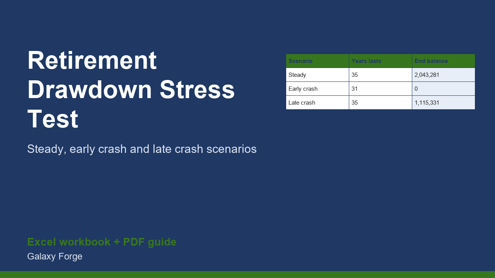

Run the same retirement spending through a steady market, an early crash and a late crash, year by year with inflation, Social Security and a pension, and see how long the money lasts.
Two retirees with the same savings, the same spending and the same average return can end up in very different places if the bad years come first. This is sequence-of-returns risk, and an average-return calculator hides it completely.
This workbook runs one plan through three scenarios you control: a steady market, an early crash (a large loss in year one and a smaller one in year two), and a late crash (a large loss in year twenty). Spending rises with inflation, Social Security starts at the age you choose, a pension reduces the withdrawal, and the table shows the balance year by year for 35 years.
The Summary shows, for each scenario, the last year the money lasts, the balance at the end and the starting withdrawal rate, so you can see how fragile the plan is and what to change first.
1) On Inputs, enter your portfolio value, current age, planned annual spending in today's money, inflation, the steady return, the crash sizes and the Social Security and pension details. 2) Read the Summary: the age at which the money runs out in each scenario. 3) Change one input at a time (spending, Social Security start age, crash size) and see which lever moves the result most. 4) Record the scenarios you tested.
Free guide: Sequence-of-Returns Risk: Why the Order of Market Returns Matters in Retirement
Price: $39, one-time. Download: retirement_drawdown_stress_test.xlsx (Inputs, Projection, Summary) and this guide. Works in Excel 2016 or later, Excel for Mac and Excel on the web; opens in Google Sheets and LibreOffice.
New product, listed 2026-11-05: no sales or reviews yet. Example figures in the workbook are illustrative.
This workbook is a calculation tool, not investment, retirement, tax or financial-planning advice. It models three fixed, hypothetical return paths, not forecasts, and ignores taxes, fees, health shocks and changes in spending. Discuss your plan with a qualified, fiduciary adviser before acting.